Fishotgun

About The Game
A calm world, a shotgun, and fish that fight back.
Fishotgun puts you in the paws of a rabbit fisher who catches fish with a shotgun. Fishing is the core mechanic, but it plays like a combat encounter rather than a quiet minigame.
When you get close enough to a fishing spot, you can enter a fight. During that fight, the fish are hidden: you only read their silhouettes and species, follow their movement, fill the gauge, then shoot to capture them.
Captured fish fill the Fishodex, a book that categorizes every species you have caught. Upgrades can improve your weapon or your chance of meeting rare fish, while the shop lets you buy ammo and trade wanted fish with other players.
Game Loop
Track, fire, fill the Fishodex.
01 Find a spot
Walk across the peaceful map, get close to a fishing point, and interact with it to enter the combat phase.
02 Follow the fish
Read the silhouette, follow the fish long enough to fill the gauge, then fire when the shot is ready.
03 Collect and trade
Add captured fish to the Fishodex, upgrade your odds, buy ammo, and use controlled chat to interact with other players.
Studio
Rabbit Hole
Rabbit Hole is a small EPITA student team building a game that mixes cute visuals, social multiplayer energy, and a slightly unhinged core idea. The name fits: every new feature sends the project one layer deeper into the tunnel.
In-Game Preview
A closer look at the world
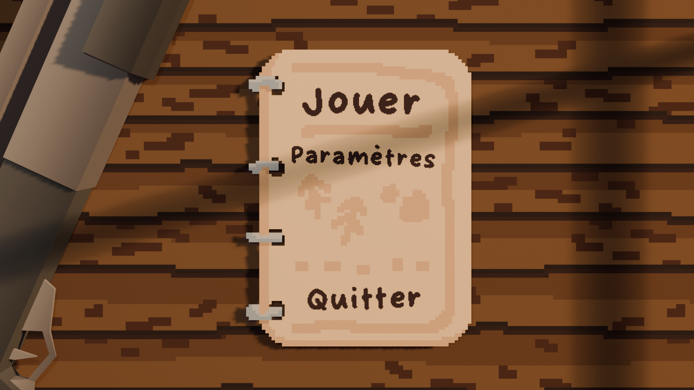
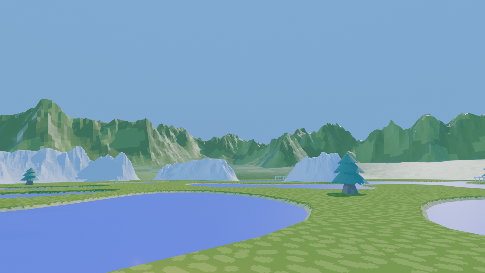
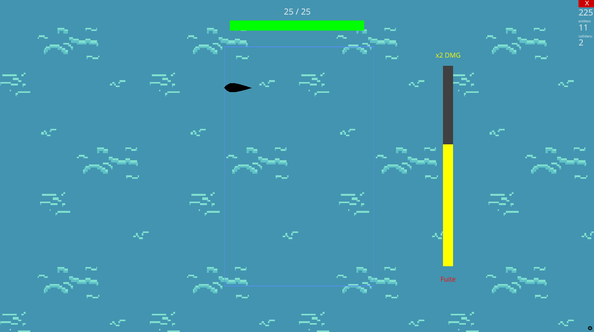
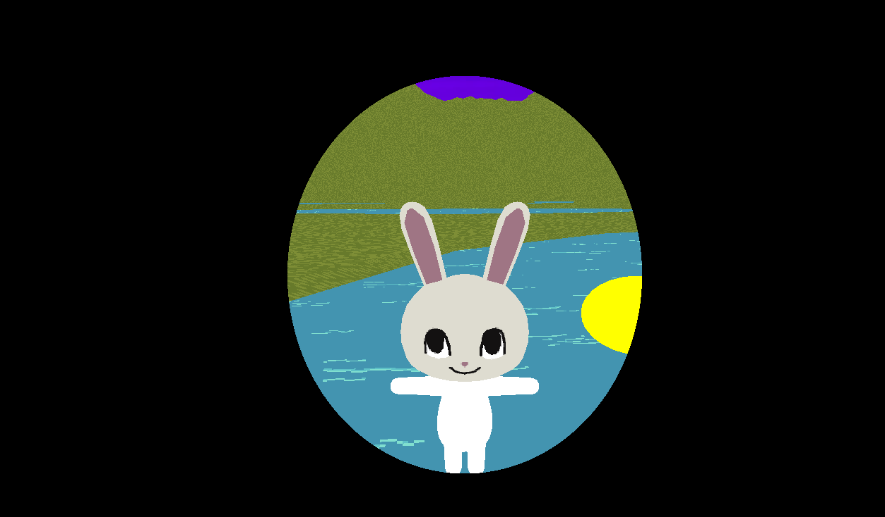
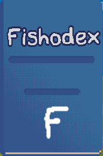
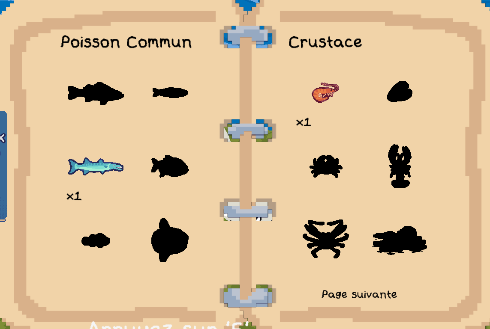
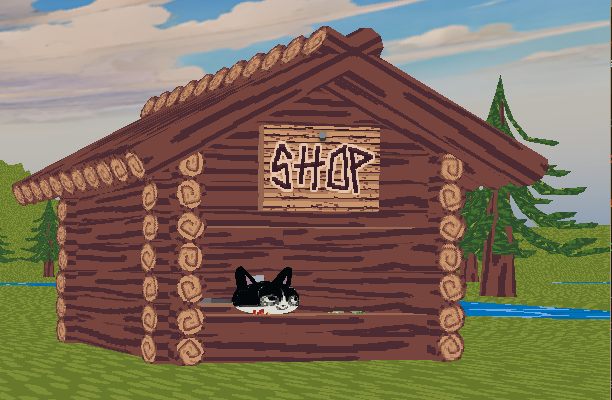
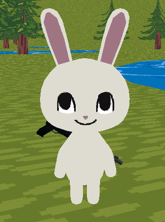
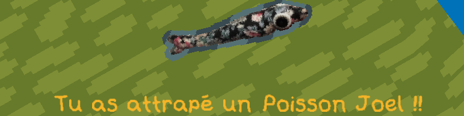
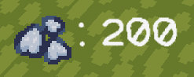
Roadmap
Version history
A versioned timeline highlighting the major features added at each milestone.
Project foundations
Repository setup, first menu work, engine migration to Ursina, README cleanup, and the first camera rotation prototype.
Movement, physics and networking base
Basic movement, third-person camera, fishing spots, server sockets, packet API, collision work, player sync, fish movement, and first spawn/move loop.
First soutenance
First formal project checkpoint, covering the early technical base and development direction.
Soutenance 1 reportMenus, chat and multiplayer UX
Main menu, server list, scrollable menus, book menu, chat, escape flow, styled UI, client-server reconciliation, and smoother player animation.
World, water and persistence
Terrain scale, mountains, sky, custom fonts, water shader, pixelized water, grass texture, ambient light, logo, and server/client save systems.
Second soutenance
Second project checkpoint, after the multiplayer UX, fishing combat, world, water, and save systems had moved forward.
Soutenance 2 reportFishing combat, audio and Fishodex
Shotgun gameplay, combat transition, pressure and HP bars, splash and gunshot sounds, game music, bird ambience, inventory, fish textures, and Fishodex foundations.
Collection, shop and content sprint
Collected fish now feed the inventory and Fishodex, shop selling/economy systems arrived, dollars became scales, new fish and rarities were balanced, HUD/UI/menu polish landed, playlists were added, and debug/minor issues were cleaned up.
Playable progression build
Current build: stabilized levels, movement, shop/server behavior, chat/Fishodex layering, and packaged everything into a cleaner playable build.
Final soutenance
Final project report for the current playable build, covering the latest content, polishing work, and delivery state.
Final reportTeam
Dev Team
Rabbit Hole brings together a small EPITA team with complementary profiles across coordination, art direction, and development, all working on Fishotgun's strange little pond.
Adrien Gayerie
Team lead, artist, developer
Adrien plays a central role in the team, balancing coordination, visual direction, and hands-on development work across Fishotgun.
Aurelien Lamarque
Deputy lead, developer
Aurelien supports project coordination while staying deeply involved in development, helping connect production needs with technical execution.
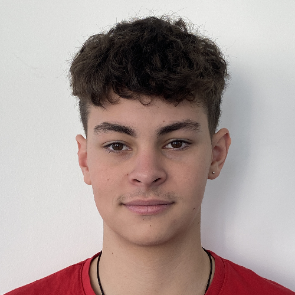
Noah Fauvel
Developer
Noah works on gameplay physics, player movement, camera feel, and fish AI, bringing together his interest in physics and artificial intelligence.
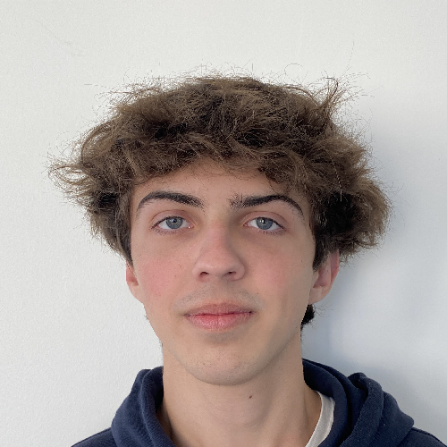
Joel Lipski
Developer
Joel focuses on fishing systems, interface design, and multiplayer, building on experience with Luau on Roblox Studio and Python projects.